Divulgación
El grupo COSMO CTA organiza un ciclo de conferencias de divulgación científica titulado Martes de Ciencia, en el cual se tocan temas de astrofísica, cosmología, tecnologías cuánticas y física de partículas.
Las conferencias se llevan a cabo el primer martes de cada mes en el auditorio del Centro Tecnológico, y a veces organizamos ventos especiales en otras fechas o sedes.


| Fecha | 8M | |
|---|---|---|
| 05/Noviembre/2019 |
Descripción La superconductividad es un fenómeno físico fascinante, un efecto completamente cuántico a nivel macroscópico, un privilegio que comparte con su hermana la superfluidez; es un estado de la materia en el cual diferentes tipos de materiales como metales, semiconductores, aleaciones e incluso aislantes, se transforman en conductores ideales que permiten el flujo de electrones sin pérdida de energía. Para encontrar ese estado fue necesario llegar a temperaturas muy bajas, muy cercanas al cero absoluto. A esas temperaturas, donde el sentido común indica que los objetos tienden a inmovilizarse, se encontró que los electrones y los iones se coordinan con el fin de evitar las colisiones entre sí, moviéndose con perfecta libertad a través del material. - Dr. Alberto Rubio Ponce Ver Mas... |
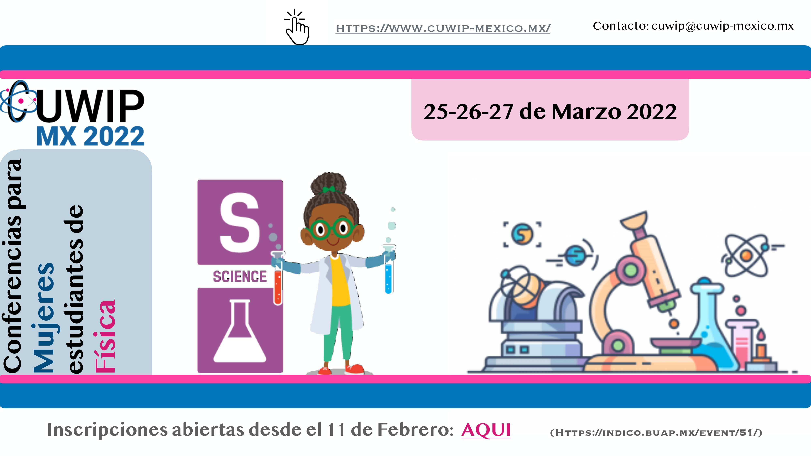 |
| Fecha | Física de bajas temperaturas: Superconductividad | |
|---|---|---|
| 05/Noviembre/2019 |
Descripción La superconductividad es un fenómeno físico fascinante, un efecto completamente cuántico a nivel macroscópico, un privilegio que comparte con su hermana la superfluidez; es un estado de la materia en el cual diferentes tipos de materiales como metales, semiconductores, aleaciones e incluso aislantes, se transforman en conductores ideales que permiten el flujo de electrones sin pérdida de energía. Para encontrar ese estado fue necesario llegar a temperaturas muy bajas, muy cercanas al cero absoluto. A esas temperaturas, donde el sentido común indica que los objetos tienden a inmovilizarse, se encontró que los electrones y los iones se coordinan con el fin de evitar las colisiones entre sí, moviéndose con perfecta libertad a través del material. - Dr. Alberto Rubio Ponce Ver Mas... |
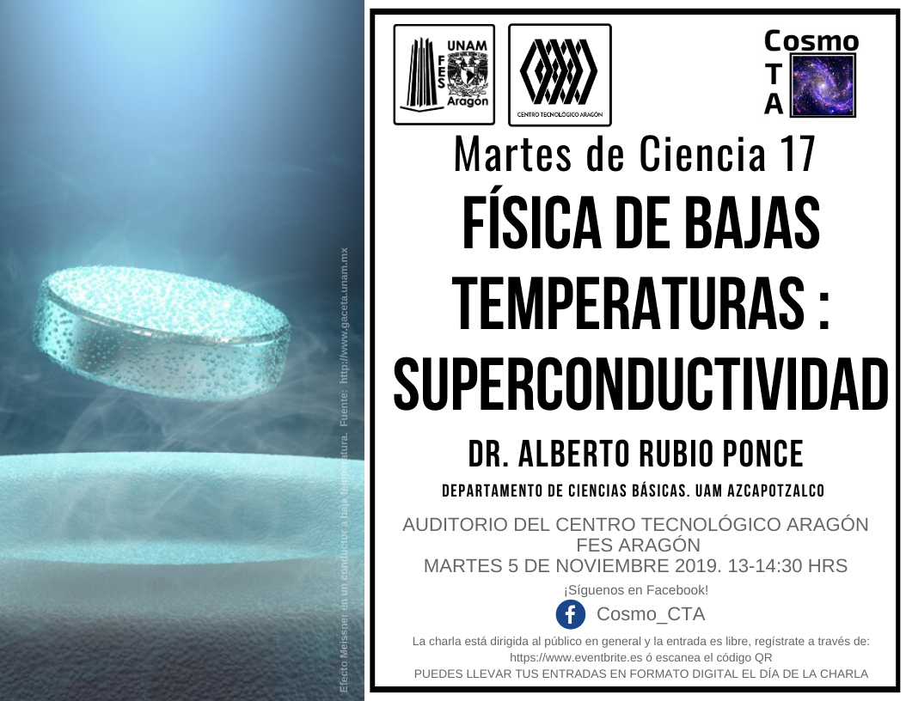 |
| Fecha | Hacia una Electrónica nueva basada en carbono: Grafeno | s|
|---|---|---|
| 01/Octubre/2019 |
Descripción En la tercer charla del ciclo de conferencias el Dr. Gerardo del Instituto de Física de la UNAM nos hablará aerca del grafeno, una sustancia de carbono que puede llegar a ser mucho mas fuerte que el acero mas duro actualmente. - Dr Gerardo García Naumis Ver Mas... |
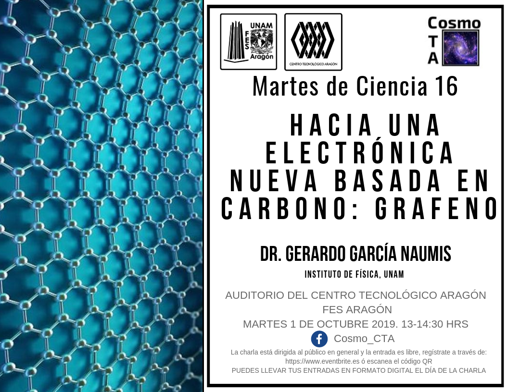 |
| Fecha | Súper Tareas, Cómputo y la Topología del Espacio-Tiempo | |
|---|---|---|
| 03/Septiembre/2019 |
Descripción Una súper-tarea se define como una sucesión infinita de operaciones sucesivas que ocurren durante un tiempo finito. Por otro lado, Turing define un proceso computable como uno que termina en un tiempo finito y a través de un número finito de pasos. Sin embargo, ¿a que noción de tiempo se refería Turing? En un proceso computable, ¿la noción de 'tiempo', es universal? En esta charla exploraremos las implicaciones que una noción de tiempo relativista tiene para los problemas centrales en computabilidad. - Dr César S. López-Monsalvo Ver Mas... |
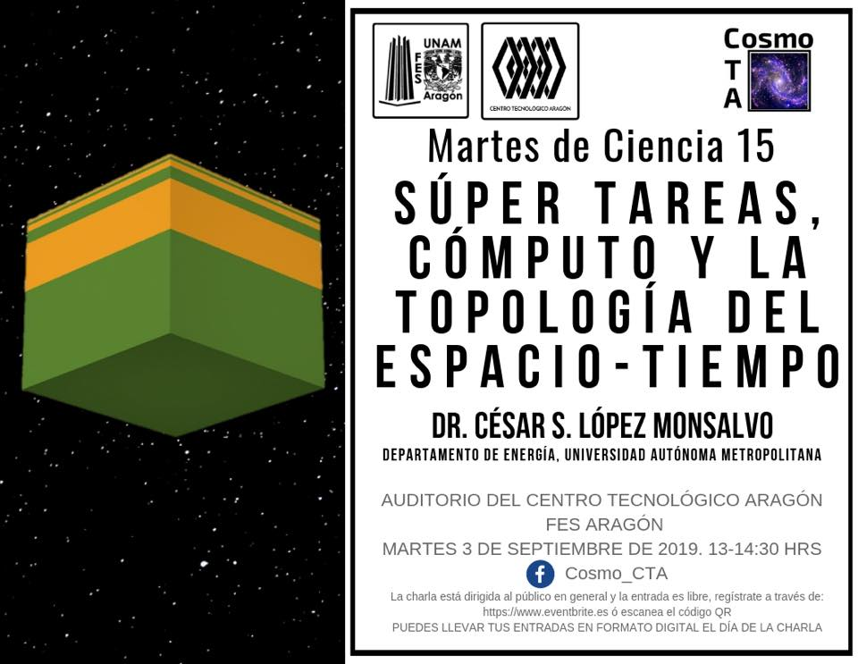 |
| Fecha | Lentes Gravitacionales, Ondas de Sonido y el Universo Invisible | |
|---|---|---|
| 20/Agosto/2019 |
Descripción El origen y destino del Universo han acaparado la imaginación del hombre desde la antigüedad, pero no había sido posible estudiarlo de manera sistemática sino hasta hace relativamente poco. Actualmente podemos realizar mapas de la posición de millones de galaxias, medir con gran precisión la temperatura de la luz más vieja del universo y extraer información sobre la historia de nuestro Universo usando reglas de tamaño conocido o estrellas que explotan con una luminosidad estándar. Con todas esas mediciones hemos obtenido muchas respuestas y se han abierto nuevas interrogantes. En esta charla hablaremos de las Lentes gravitacionales como muestra de la existencia de un tipo de materia invisible y muy abundante, de cómo la luz más vieja del Universo nos muestra que éste es plano y el uso de reglas de tamaño conocido para medir la rapidez con que se expande el Universo. Ver Mas... |
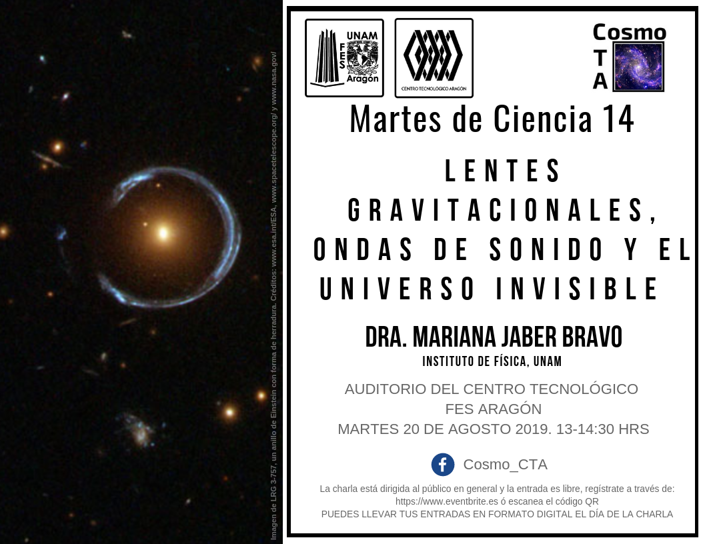 |
| Fecha | Teoría de Cuerdas y Entralazamiento Cuántico | |
|---|---|---|
| 14/Mayo/2019 |
Descripción La teoría de cuerdas busca describir todo lo que existe en nuestro universo a partir de un solo tipo de ingrediente básico. Ya sea que logre o no eventualmente alcanzar esta ambiciosa meta, a lo largo de los años ha dado lugar ya a muchos otros resultados útiles, y es por ello un área de investigación muy activa a nivel mundial. A la fecha, su fruto más importante ha sido el descubrimiento de la llamada correspondencia holográfica (o AdS/CFT), que transformó por completo nuestra visión de la física moderna, al revelarnos que universos con o sin gravedad, y con distintos números de dimensiones, pueden ser completamente indistinguibles. En esta charla echaremos un vistazo a esta asombrosa correspondencia y algunas de sus aplicaciones, incluyendo el contacto que ha hecho con el concepto de entrelazamiento cuántico, que es una propiedad fascinante de nuestro universo a nivel microscópico. Ver Mas... |
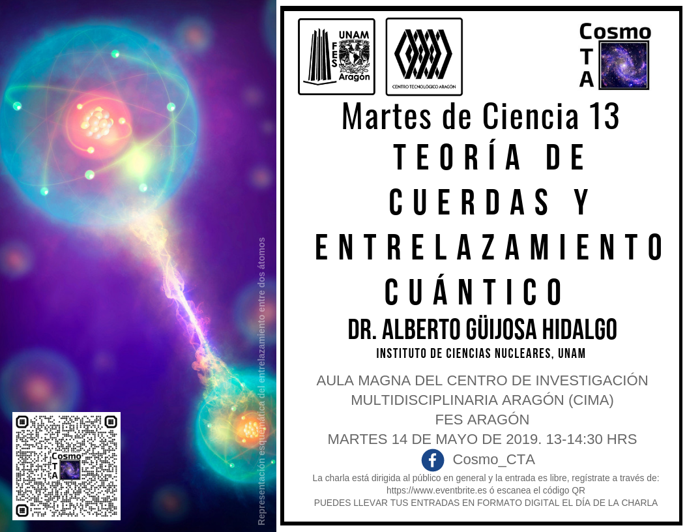 |
| Fecha | Las Dimensiones del Arte | |
|---|---|---|
| 02/Abril/2019 |
Descripción El grupo CosmoCTA tiene el honor de invitarte a la segunda charla del semestre que forma parte de nuestro ciclo de conferencias Martes de Ciencia, esta vez contaremos con la presencia del Dr. Gustavo Arciniega, quien actualmente cursa su posdoctorado en nuestra Facultad, la FES Aragón. Se presentará brevemente el concepto de dimensión en la física y las matemáticas como se entiende en Teoría de Cuerdas y Relatividad, y veremos cómo estas ideas influyeron en el arte, particularmente en las vanguardias de principios del siglo XX (cubismo, futurismo, etc). Ver Mas... |
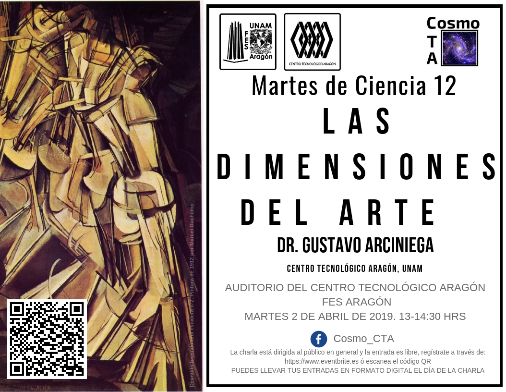 |
| Fecha | Antimateria la Materia Efímera | |
|---|---|---|
| 05/Marzo/2019 |
Descripción Imaginemos qué tienen en común la posibilidad de vuelos interplanetarios más rápidos, la detección de tumores, la evolución del Universo y la búsqueda por entender, al nivel más elemental, de qué están hechas y cómo interactúan las cosas. La respuesta es la antimateria. La utilización de la antimateria es amplia y ocurre en muy diversos contextos. El interés en ésta no se restringe al ámbito de la ciencia básica, donde se utiliza como sonda para develar los misterios de la naturaleza a nivel fundamental, sino que también pasa por su aplicación en medicina para la detección de tumores con la Tomografía por Emisión de Positrones (PET, por sus siglas en inglés) e incluso alcanza planes para su uso como combustible de naves espaciales en un futuro no muy lejano. En esta charla presento un panorama acerca de las propiedades y aplicaciones de la antimateria que espero muestre el interés que la manipulación de esta sustancia despierta en la comunidad científica internacional. -Dr. Alejandro Ayala Ver Mas... |

|
| Fecha | Física de Particulas: Pasado, Presente y Futuro | |
|---|---|---|
| 205/Febrero/2019 |
Descripción En esta charla, abordaré de manera muy general el Modelo Estándar de las partículas elementales, cómo se fue construyendo desde la base de los experimentos, su poder predictivo y su relación con el Universo en el que vivimos. Hablaré sobre los retos actuales a los que se enfrenta este modelo, que sugieren un modelo de partículas más “grande”. Dr. Ángel Sánchez Cecilio Ver Mas... |

|
| Fecha | Control de las propiedades cuánticas de las parejas de fotones | |
|---|---|---|
| 20/Noviembre/18 |
Descripción La novena conferencia fue la última del 2018 el día 20 de Noviembre titulada “Control de las propiedades cuánticas de las parejas de fotones y sus aplicaciones, expuesta por el Dr. Héctor Cruz Ramírez del Instituto de Ciencias Nucleares, nos mostró cómo eran los laboratorios de óptica cuántica y un poco de lo que hacen ahi, en particular sus estudios en las parejas de fotones, nos explico como se detectan los fotones con potenciometros, como ver las coordenadas fotónicas y algunas de sus aplicaciones como la Tomografía de Coherencia Óptica y mejoras en la estrectostopia Ver Mas... |
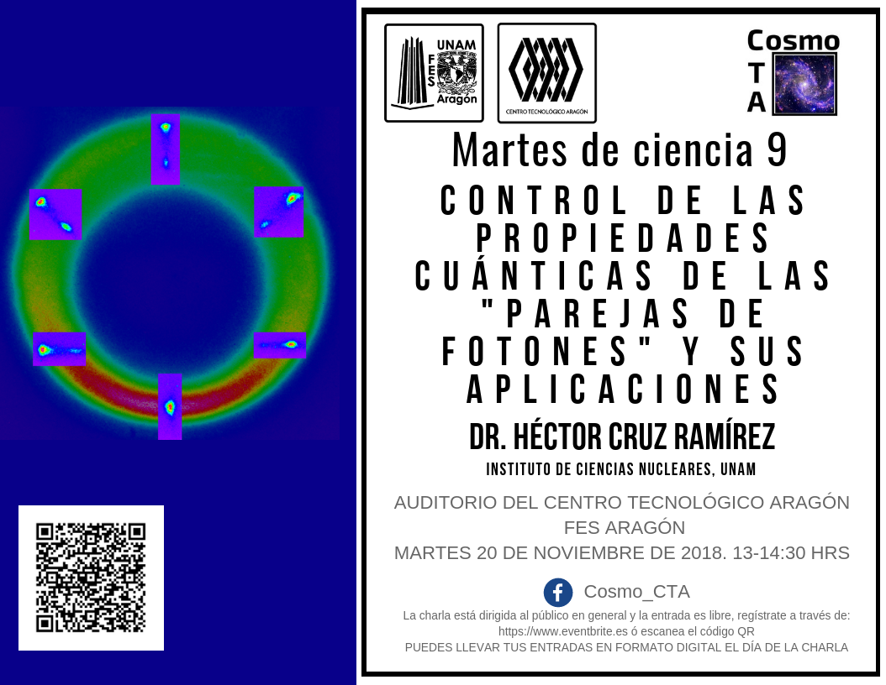 |
| Fecha | Puntos cuánticos una promesa biomédica | |
|---|---|---|
| 06/11/18 |
Descripción “Puntos cuánticos una promesa biomédica” por el Dr. Gabriel Gil Pérez, del Dipartimento di Chimiche Università Degli Studi di Padova, Italia y del Instituto de Cibernética, Matemática y física la Habana, Cuba. Aquí explico qué son los puntos cuánticos, y cómo se aplican a las nuevas tecnologías, específicamente a la medicina, como la terapia fotodinámica que sirve para tratar el cáncer o como un tratamiento complementario a las cirugías Ver Mas... |
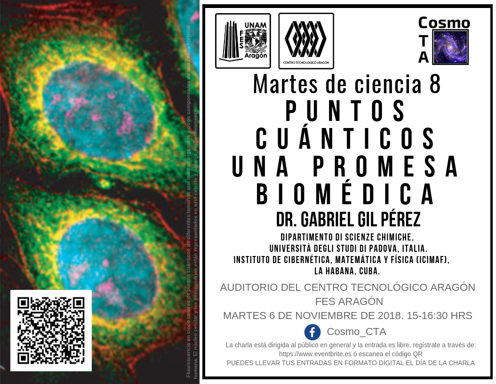 |
| Fecha | Relatos cuánticos | |
|---|---|---|
| 06/11/18 |
Descripción La octava conferencia se expuso el día 6 de Noviembre del 2018 titulada “Relatos cuánticos ¿Qué demonios es un condensado de Bose-Einstein?, con el Dr.Elías Castellano, del Mesoamerican Centre for Theoretical Physics, donde habló sobre cómo se clasifican las partículas elementales, los estados de la materia y claro de que es el condensado de Bose- Einstein, y algunos de los experimentos que se llevan a cabo en la Universidad de Bremen en Alemania. Ver Mas... |
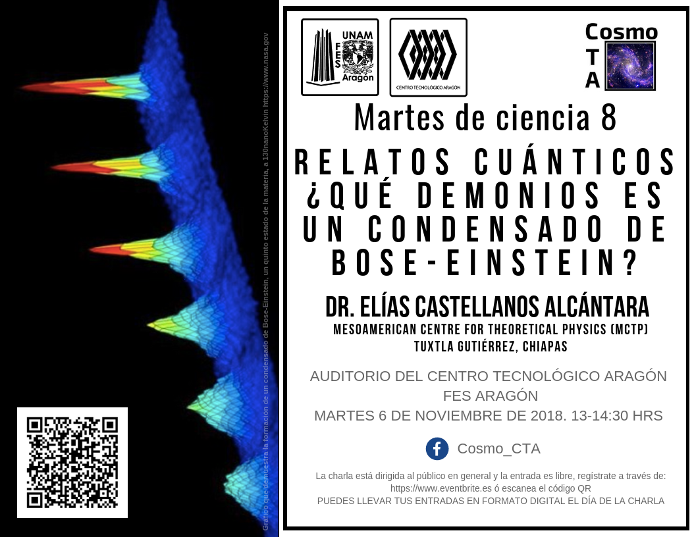 |
| Fecha | Objetos compactos y ondas gravitacionales | |
|---|---|---|
| 30/10/18 |
Descripción La séptima conferencia fue el día 30 de Octubre de 2018 se tituló “Objetos compactos y ondas gravitacionales”por la Dra. Aurora Pérez, durante la plática nos habló de las estrellas, como se crean, cuales son sus posibles finales y como la gravedad puede influir en ellos. Además expuso las ondas gravitacionales, ¿Que son? y como fueron los experimentos que lograron detectar una onda gravitacional, dicho experimento hizo ganar a Kip Thorne, Rainer Weiss y a Barry Barish el premio nobel de física en el 2017 Ver Mas... |
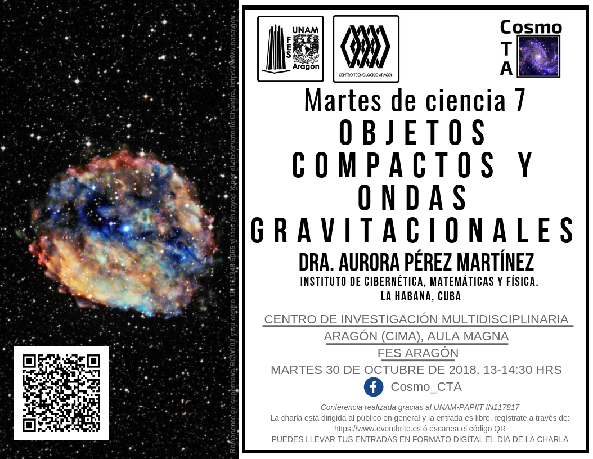 |
| Fecha | Campos Magnéticos en el universo y el laboratorio | |
|---|---|---|
| 09/10/18 |
Descripción La sexta conferencia se llevó a cabo el día 9 de Octubre de 2018 titulada “Campos magnéticos en el universo y el laboratorio”, expuesta por la Dra. Gabriella Piccinelli Bocchi del Centro Tecnológico Aragón, en donde nos habló sobre los campos magnéticos, como es que a pesar de que no los vemos sabemos que existen, que están en todos lados. Sus usos en el laboratorio y para qué sirve el campo magnético de los planetas Ver Mas... |

|
| Fecha | El lado oscuro del universo | |
|---|---|---|
| 04/11/18 |
Descripción La quinta conferencia se realizo el dia 4 de Septiembre de 2018 titulada “El lado oscuro del universo” el tema lo expuso el Dr. Jorge Luis Cervantes Cota , del Instituto Nacional de Investigaciones Nucleares, comenzó su plática explicando cómo está compuesto el universo, desde las partículas fundamentales hasta los cúmulos de galaxias. Después se adentro en la materia y la energía oscura, tratando de explicar qué son y cómo repercuten en el universo Ver Mas... |

|
| Fecha | Mundos Habitables | |
|---|---|---|
| 22/05/18 |
Descripción La cuarta conferencia se llevó a cabo el 22 de mayo de 2018, con el título “ Mundos Habitables”, a cargo de la Dra. Antígona Segura Peralta, del Instituto de Ciencias Nucleares de la UNAM. La Dra. Antigona se adentró en el difícil tema de la definición de la vida y nos habló de las condiciones necesarias para que florezca la vida en un planeta, así como de los métodos científicos para el estudio de este tema. Finalmente, nos dio un recorrido por los recientes y abundantes descubrimientos de planetas habitables. Ver Mas... |

|
| Fecha | Los agujeros negros y sus señales invisibles | |
|---|---|---|
| 08/05/18 |
Descripción La tercera conferencia, titulada “Los agujeros negros y sus señales invisibles”, impartida por la Dra. Luisa Jaime González del Instituto de Ciencias Nucleares de la UNAM, se efectuó el día 8 de mayo de 2018. La Dra. Luisa expuso frente a los asistentes las bases teóricas y los procesos físicos bajo los que se forman los agujeros negros, así como sus principales características y los métodos que nos permiten estudiar estos objetos y develar su existencia en el universo. Una de las señales que nos envían son las ondas gravitacionales que han sido detectadas recientemente. Ver Mas... |

|
| Fecha | Galaxias con Nucleos Activos | |
|---|---|---|
| 03/04/18 |
Descripción La segunda conferencia se realizó el día 3 de Abril de 2018 y fué titulada “Galaxias con Núcleos Activos. La voracidad de los hoyos negros” el ponente fue el Dr. Antonio Ramírez de la Facultad de Ciencias de la UNAM, quien nos habló de las principales características que presentan aquellas galaxias cuyo centro no se puede observar directamente pero de las cuales se miden fenómenos de extrema naturaleza, como los hoyos negros, cuyo estudio permite conocer mejor diferentes procesos de formación de estructura en el universo y su comportamiento. |
Ver Mas...
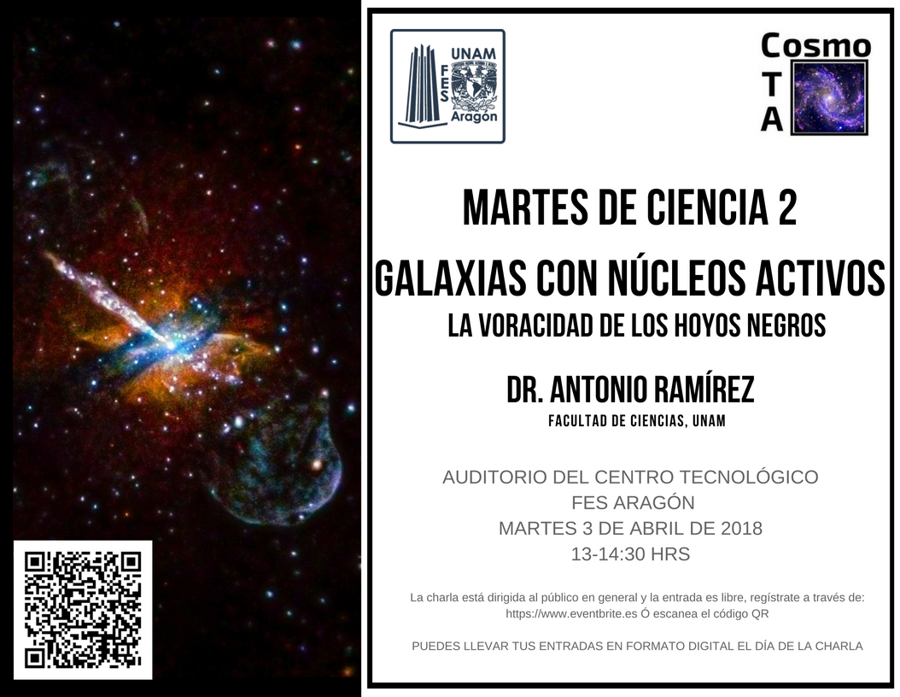 |
| Fecha | ¿Qué le podemos ver al sol? | |
|---|---|---|
| 13/03/18 |
Descripción La primer conferencia tuvo lugar el día 13 de Marzo de 2018 titulada “¿Qué le podemos ver del Sol?”. Como ponente tuvimos a la Dra. Lorena Arias Montaño, coordinadora del centro astronómico Clavius de la Ibero, quien trajo consigo un par de telescopios y nos habló acerca de los estudios y datos más importantes acerca de nuestro Sol, al finalizar la charla junto con los asistentes se hizo una observación del Sol con los telescopios y un filtro especial. |

|